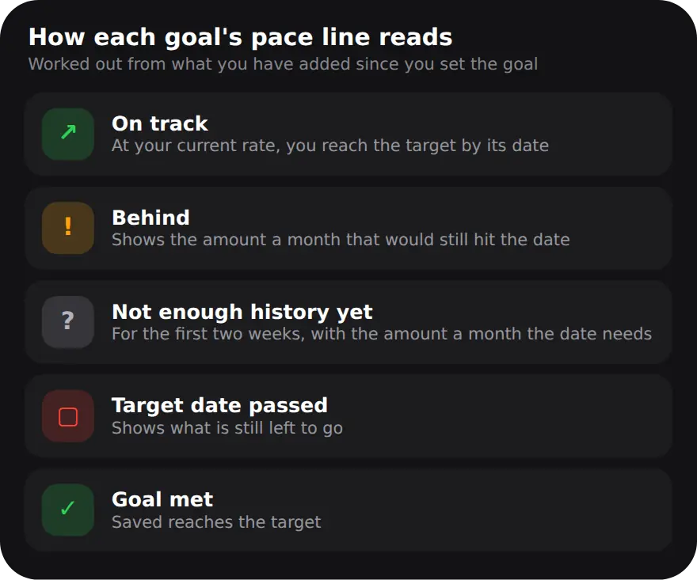

Why track a savings goal?
Because a goal with a number and a date turns "I should save more" into a question you can answer each month: am I on track?
Saving without a target is easy to postpone, because there is always next month. A goal gives the money a job. ₹30,000 for a trip in February is a clear amount with a clear deadline, and you can check it against what you have actually put aside. The point is not the percentage bar on its own, but knowing early when you are falling behind, while there is still time to catch up.
How do I set up a savings goal in MoneyOS?
Open Planning from Home, tap Goals, and add a goal with a target amount and a date. Then tap Add funds whenever you save. Five steps:
- Open Goals. On Home, open the Planning card, then tap Goals. Once you have a goal, it also shows on Home.
- Add a goal. Tap the plus button. Say what you are saving for, enter the target amount and pick a target date.
- Add funds as you save. Each time you put money aside, tap Add funds on the goal and enter the amount.
- Read the pace line. Under each goal, a line says whether you are on track at your current rate, or what you would need each month to hit the date.
- Fix mistakes without faking progress. Tap a goal to edit it. Correcting the saved amount adjusts the starting balance too, so a fix is never counted as saving.
Add funds records the amount in MoneyOS only. It does not move money or touch your bank, so you can keep the savings wherever you like: a savings account, an FD or cash at home.
How does MoneyOS tell if I am on track?
It takes what you have added since you set the goal, works out your average monthly rate, and checks whether that rate reaches the target by the date.

If you are on track, the line shows the month you would finish at your current rate. If you are behind, it shows how much a month would still hit the date. For the first two weeks there is not enough history to judge a rate, so MoneyOS shows the monthly amount the date needs instead of guessing. Only what you add after setting the goal counts towards the pace, so money that was already in the goal on day one, or a correction you make later, never looks like a saving habit.
Can I save for several goals at once?
Yes. Goals not yet met come first, nearest target date first, so the one that needs attention soonest is always at the top.
That top goal also appears on Home with what is left to go, and the Planning screen shows how many goals you have and how much of their combined targets is funded. Goals belong to the ledger you are in, so Personal, Family and Business can each have their own. Read more on separate ledgers.
How do I make a savings goal stick?
Pick a real date, add funds on the same day each month, and let the pace line tell you early when to adjust.
One simple habit is to move money aside on salary day, before the month's spending starts. If you plan your month that way, see the salary day budget plan. If a goal falls behind, you can add more, push the date out, or lower the target: all three are honest choices, and the pace line updates either way. For a longer view of what you own, see how to track your net worth. Everything stays on your iPhone, with no account. See the privacy policy.
Frequently asked questions
How do I track a savings goal in MoneyOS?
Open Planning from Home, then Goals, and add a goal with a target amount and a date. Tap Add funds whenever you save towards it, and the goal shows your progress and pace.
How does MoneyOS know if I am on track?
It looks at what you have added since you set the goal and assumes you keep saving at that average rate. If that rate reaches the target by the date, the goal is on track.
Why does my new goal say not enough history yet?
A pace needs at least two weeks of history. Until then, MoneyOS shows how much a month would hit the date instead of guessing a rate from a few days.
Does adding funds move money out of my account?
No. Add funds only records the amount in MoneyOS. It does not connect to your bank or move any money.
Can I have more than one goal?
Yes. Goals that are not yet met are listed first, nearest target date first, and the one that needs attention soonest also appears on Home.
Is MoneyOS free?
Yes. The whole app is free, with no subscription, no ads and no in-app purchases.